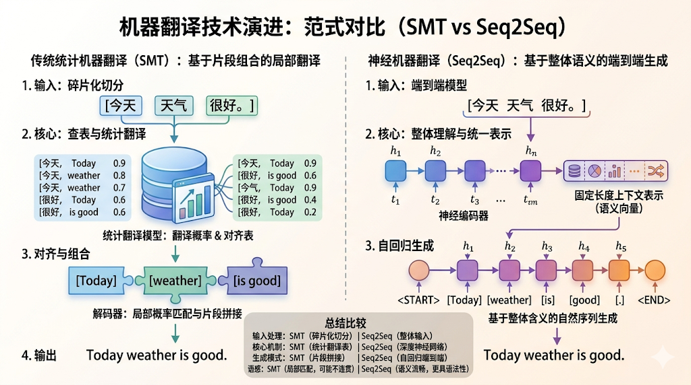
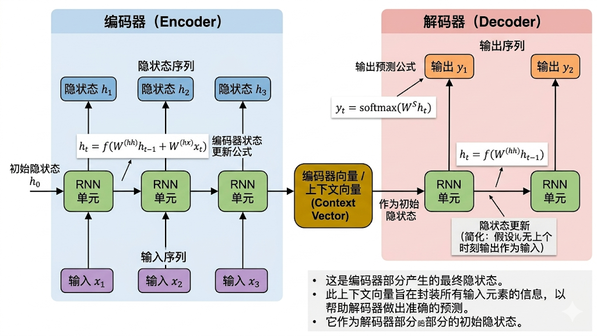
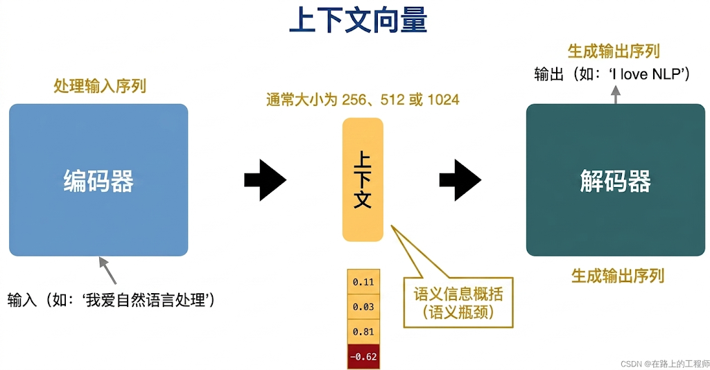
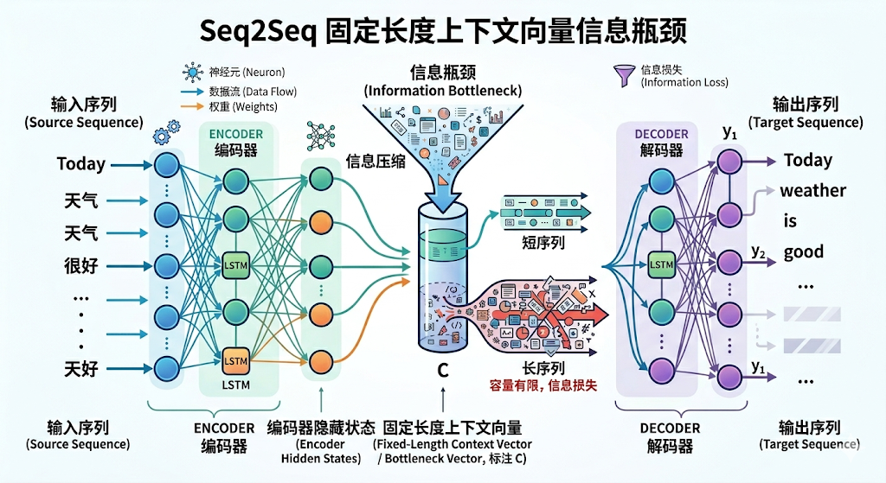
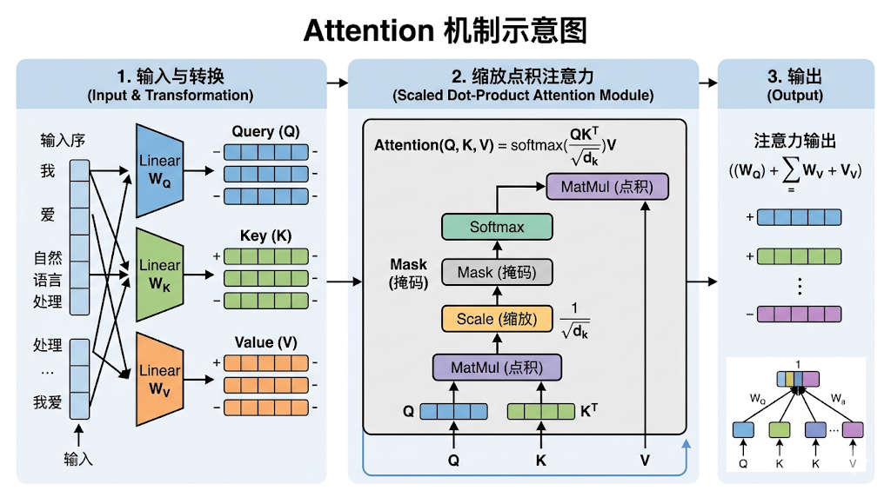
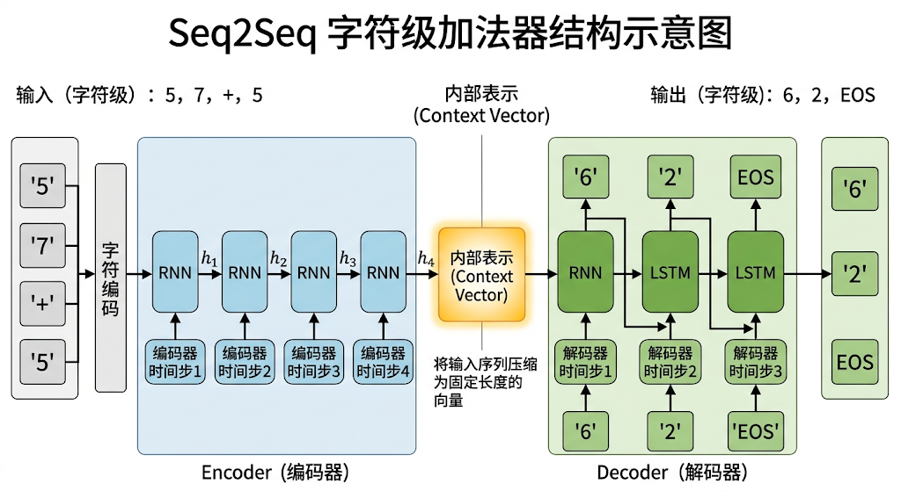
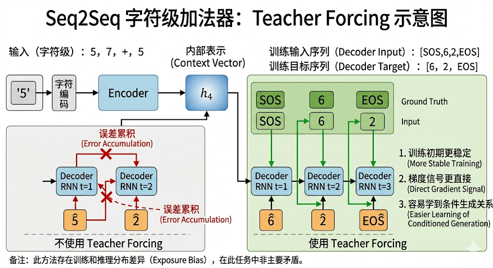

“你以为是AI在进化迭代，其实是人类还没学会思考。”——诺贝尔物理学奖&图灵奖获得者&深度学习之父Geoffrey Hinton
想象这样一个场景：在公元前6世纪的巴比伦，犹太学者需要用阿拉姆语记录《但以理书》；15世纪的马六甲商人用混合阿拉伯语和泰米尔语谈判；而今天的你，可能正用手机扫描英文菜单上的Tempura，并期待一句准确的中文翻译。
语言，既是文明的载体，也是沟通的壁垒。直到2000年代，机器翻译仍像一位笨拙的“词典搬运工”——它能逐词替换，却无法理解“心有灵犀一点通”为何不能直译为“A single spark connects two hearts”。
时间来到2014年，深度学习领域的一场静默革命悄然发生。Google Brain团队的三位年轻科学家，Ilya Sutskever、Oriol Vinyals和Quoc V. Le发表了经典论文《Sequence to Sequence Learning wth Neural Networks》，首次让神经网络像人类一样“理解句子”。
值得一提的是该论文的第一作者Ilya Sutskever日后成为了OpenAI的联合创始人，对大模型的发展作出了不可磨灭的贡献。
在汉语-英语翻译的任务中，基于Seq2Seq的谷歌GNMT系统将误差率较传统方法降低了55%-85%。“一期一会”（珍惜当下相遇）不再被直译为“one time, one meeting”，而是生成英语“treasure every encounter, for it will never recur”。
但Seq2Seq的威力远超语言转换范围，在语音识别、文本摘要、代码生成、对话系统等多个领域都表现出了前所未有的威力。
2000年代，机器翻译的主流方案是统计机器翻译（Statistical Machine Translation，SMT）。它的核心思路是：从大量双语语料中统计“哪段短语最可能对应哪段短语”，再用概率模型拼接出最终结果。

例如，谷歌早期翻译系统就大量依赖这种“短语对齐 + 概率表”的方法。它在当时已经非常先进，也确实推动了机器翻译走向大规模实用化。但随着应用规模扩大，它的局限性也越来越明显。
第一，长句容易失控。 SMT 往往把句子拆成很多局部短语分别处理，这种做法在短句里还勉强可用，但一旦句子变长、修饰层次变多、语序差异变大，就容易出现上下文断裂。比如中文里“虽然……但是……”和英文里的让步结构就不总是一一对应，机械拼接很容易生成别扭甚至错误的句子。
第二，它更像“会查表”，而不是“真理解”。 一旦遇到谚语、隐喻、文化表达、跨句依赖，统计模型就容易露怯。因为它擅长的是“这个短语常见对应哪个短语”，但不擅长整体建模“这句话究竟在说什么”。
第三，系统越来越复杂，维护成本越来越高。 为了让 SMT 变得更强，人们不断往里面塞入各种人工设计的特征、规则和语言模型。结果就是系统越堆越厚，效果却越来越逼近天花板。
到2014年前后，谷歌翻译已经在全球范围内处理海量查询，覆盖语言数量也不断增加。面对爆炸式增长的多语言需求，传统统计方法的上限越来越明显。行业内部开始形成共识： 要想让机器翻译继续前进，就必须找到一种能从整体上建模句子语义的新范式。
假设我们的任务是把中文句子翻译成英文句子。例如：
这是一个典型的序列到序列（Sequence-to-Sequence）任务。输入是一个变长序列，输出也是一个变长序列，而且两者长度不一定相等，词语之间的对应位置也往往不是一一对齐的。
比如中文里的“昨天”在英文中对应“yesterday”，但位置可以前后变化。那么，传统神经网络模型为什么难以直接处理这个任务？
首先是深度全连接神经网络（DNN）。DNN 更适合处理固定长度输入 → 固定长度输出的问题，比如分类任务：输入一张图片，输出一个类别；输入一段固定维度特征，输出一个预测值。 可翻译不是这样。翻译面对的是：
如果硬要用 DNN 处理翻译，就必须先把一句话压成固定长度表示，再要求输出也是固定长度。这种做法不仅不自然，而且很容易丢失词序信息和上下文关系。换句话说，DNN 并不擅长处理“可变长度、强顺序依赖”的序列问题。
CNN 在图像领域非常强大，因为它擅长提取局部模式，例如边缘、纹理、局部结构。放到文本里，CNN 也能提取局部短语模式，比如“昨天去了”“to school”这类局部组合。但翻译任务不仅需要局部模式，还要理解：
CNN 不是完全不能做序列建模，但它并不像循环神经网络那样天然适合“按顺序读入并持续更新状态”。因此，在早期 NLP 的主流序列任务上，CNN 并不是最自然的选择。
RNN 的出现，第一次让神经网络具备了“按时间顺序处理序列”的能力。它会把前面的隐藏状态带到后面，让模型可以记住先前信息。
这对语言任务来说非常关键。因为语言本身就是线性的、流动的、有前后关系的。但普通 RNN 有两个经典问题：梯度消失、梯度爆炸。
这使得它在处理较长序列时训练困难，很难稳定记住远距离信息。后来，LSTM通过门控机制缓解梯度消失，但编码器仍将整个输入序列压缩为一个固定维度的上下文向量（context vector），导致信息丢失。
例如：输入句子 "The cat, which was sitting on the mat, ran away"（长句包含多个修饰成分），翻译为 "那只坐在垫子上的猫跑了"。
LSTM编码器会将整个长句压缩为一个向量，这样就可能丢失细节，如“坐在垫子上”的修饰关系，导致解码器生成错误，如漏译修饰语。
所以，单纯的 LSTM 并没有自动解决“翻译”这个问题。因为翻译不是只“读一句话再输出一个标签”，而是：输入是一个序列，输出也是一个序列，而且输入输出长度不同、语序不同、对齐复杂。
早期一个很直接的想法是：先让一个 LSTM 把整个输入句子读完，压缩成一个向量；再让另一个 LSTM 从这个向量出发，把目标句子一步步生成出来。
这，就是 Seq2Seq 的基本思想，但这里也埋下了它最经典的限制： 如果整个输入句子的信息都被强行压缩进一个固定长度向量，那么句子一长，信息就容易“塞不下”。
也就是说，Seq2Seq 的出现是一次重大突破，但它并不是终点。它开创了新范式，同时也暴露了新的瓶颈，而这个瓶颈，后来正是由 Attention 来进一步突破。
从一种语言翻译为另一种语言，这种有点像破译密码的过程给神经网络科学家带来了灵感，早期的编解码概念源于密码学，加密过程需要将明文转换为密文，这是编码，然后接收方再通过密钥还原，这是解码。
同样的，在seq2seq的结构中，也分为了两个过程：解码和编码，它们具体实现称之为：编码器和解码器，英文为：Encoder和Decoder。

编码器采用单向RNN（论文中使用LSTM）将输入序列压缩为固定长度的上下文向量。
以输入处理以英文句子"Who are you"为例，编码器的任务是最终将输入序列（"Who are you"）压缩成一个包含整个句子信息的上下文向量。
1）输入处理：
首先，句子被处理成模型能理解的形式。单词 "Who", "are", "you" 会被转换为对应的数值索引，并进一步通过一个嵌入层转化为稠密的词向量。这些词向量能够捕捉单词的语义信息。
2）逐步编码：
接着，这些词向量被顺序输入到编码器的循环神经网络中。编码器通常由RNN、LSTM或GRU实现。
这个过程就像一个人一边读句子，一边在脑中不断更新自己对整句话的理解。
3）生成上下文向量：
在最早的 Seq2Seq 模型中，编码器最后一个时间步的隐藏状态（有时还包括细胞状态）会被当作整个输入句子的上下文表示（context vector）。
这个固定大小的向量上下文表示（context vector）的目标就是概括整个输入句子 "Who are you" 的核心语义信息。
它的目标是尽可能把整句话的核心语义压缩进去。这正是 Seq2Seq 最早期最关键的思想： 用一个神经网络把变长输入压缩成内部表示/权重参数，再交给另一个神经网络继续生成变长输出。

解码器的任务，是根据编码器给出的上下文表示，逐步生成目标语言序列。如果源句子是：“Who are you”，那么解码器希望生成的目标句子可能是：“你是谁”。
解码器通常也是一个 RNN、LSTM 或 GRU。它的初始隐藏状态被设置为编码器产生的上下文向量 $h_3$ 。这样它一开始就“带着对源句子的理解”开始工作。
然后是一个逐步生成的过程，这是一个自回归过程，即每一步的输出会成为下一步的输入。
第一步：输入一个特殊的开始标记<SOS> 的词向量和初始隐藏状态（上下文向量）。 解码器RNN根据输入计算，产生一个新的隐藏状态，并输出一个在目标词汇表上的概率分布。然后通常选择概率最高的词，例如 "你"作为第一个输出。同时，当前的隐藏状态会传递给下一步。
第二步：输入上一步生成的词 "你"的词向量和上一步的隐藏状态。 然后解码器RNN继续计算，输出下一个词的概率分布，生成词 "是"。再不断重复此过程。当解码器生成一个特殊的结束标记<EOS> 时，序列生成过程终止。
很多人第一次看到 Seq2Seq，会觉得它好像只是“两个 LSTM 拼起来”。表面上看，确实如此。 但它真正的革命性，不在于“用了两个 LSTM”，而在于它第一次系统地解决了这样一个问题： 如何让神经网络完成“一个变长序列映射到另一个变长序列”的任务。
这件事的意义非常大。因为一旦“输入序列 → 输出序列”这条路被打通，很多过去看似完全不同的问题，忽然就能放进同一个框架里理解：
这也是 Seq2Seq 影响深远的原因。它不只是解决了一个翻译问题，而是打开了一整类生成式任务的大门。
当然，Seq2Seq 虽然伟大，但它并不完美。最经典的问题就是：编码器要把整句信息都塞进一个固定长度的上下文向量里。
对于短句，这种方法还能工作得不错；可一旦句子变长，信息量增大，模型就容易出现“前面记不住、后面塞不下”的情况。
比如句子里有很多修饰成分、从句、转折、代词指代时，解码器生成目标句时就可能漏掉细节，或者把关系弄乱。
所以 Seq2Seq 的历史意义，可以概括成两句话：
第一，它第一次把“序列到序列”问题用端到端神经网络打通了。
第二，它也暴露出一个新的核心难题：固定长度表示会成为信息瓶颈。

而这个瓶颈，后来直接催生了 Attention 机制。

在学习完seq2seq的原理之后，我们基于seq2seq算法实现一个简单的加法计算器，如输入字符串“57+5”，seq2seq要能正确回答“62”。

这看起来像小学生口算，但从建模角度讲，它其实正是一个标准的序列到序列任务：
这个实验的价值，不在于真要训练一个实用加法器，而在于它能非常清楚地展示： 只要一个任务能够被表述为“输入序列 → 输出序列”，Seq2Seq 就可以尝试去学它。
首先我们对数据进行预处理，要把“字符串加法”转成模型能读的格式，由于Seq2Seq是“序列→序列”的映射模型，所以要把“57+5”“62”这类字符串，转成模型可计算的数字序列：
先把任务里所有用到的字符（输入的数字、加号，输出的数字，以及模型需要的特殊标记），统一映射成数字索引（模型只认数字）：
| 字符 | 数字索引 | 类型 | 含义说明 |
|---|---|---|---|
| SOS | 0 | 特殊标记 | 序列的开始，用于提示解码器开始生成输出。 |
| EOS | 1 | 特殊标记 | 序列的结束，当解码器生成此标记时，意味着输出序列生成完毕。 |
| PAD | 2 | 特殊标记 | 用于将一批序列填充到相同的长度，以确保计算的有效性，通常在计算损失时会被忽略。 |
| 0 | 3 | 数字字符 | 输入和输出字符。 |
| 1 | 4 | 数字字符 | 输入和输出字符。 |
| 2 | 5 | 数字字符 | 输入和输出字符。 |
| 3 | 6 | 数字字符 | 输入和输出字符。 |
| 4 | 7 | 数字字符 | 输入和输出字符。 |
| 5 | 8 | 数字字符 | 输入和输出字符。 |
| 6 | 9 | 数字字符 | 输入和输出字符。 |
| 7 | 10 | 数字字符 | 输入和输出字符。 |
| 8 | 11 | 数字字符 | 输入和输出字符。 |
| 9 | 12 | 数字字符 | 输入和输出字符。 |
| + | 13 | 运算符 | 输入中使用的字符。 |
PAD是什么？就是 padding（填充），简单理解就是把原本长度或尺寸不一样的矩阵数据，补成一样大。 [PAD] 只是占位，不是真实内容。
这样做的目的，是为了方便 批量计算，因为 GPU 一般更喜欢规则、整齐的张量。
接下来我们要整理输入序列（特征）和输出序列（标签），具体来说就是把“57+5→62”拆成输入/输出序列，并转成索引： （1）输入 “57+5” → 拆成字符 ["5","7","+","5"] → 对应索引 [8,10,13,8] （2）输出 “62” → 要加 SOS（开头）和 EOS（结尾）→ 拆成 ["SOS","6","2","EOS"] → 对应索引 [0,9,5,1]
只靠“57+5”一个样本，模型学不会加法规则。需要采集整理出大量类似“12+3 → 15”、“4 + 56 → 60”的样本对，覆盖不同位数、不同数字的加法，才能让模型从数据里归纳“进位、字符映射”的规律。
数据预处理之后，开始来设计模型结构，我们用LSTM版的Encoder-Decoder结构，加法任务的输入输出均为短序列，最长仅5-6个字符，LSTM的门控机制可稳定捕捉短序列依赖，避免基础RNN的梯度消失问题，结构设计完全匹配训练流程的“信息压缩→序列生成”逻辑，具体细节如下：
数据预处理完成之后，就进入 Seq2Seq 模型本体。这里我们采用最经典的 LSTM Encoder-Decoder 结构。它的目标很明确：把输入字符串序列映射为输出字符串序列。 对于这个加法任务：
这本质上就是一个标准的序列到序列建模问题。模型并不直接“做算术”，而是通过大量样本学习一种映射规律：给定一个输入序列，如何生成对应的输出序列。
为了让长度设定前后一致，假设训练数据中两个加数 a，b 都取自 1 到 999。那么：
因此可以设定：
整个模型可以分成四个关键部分：
它们共同完成这样一条数据流：字符索引 → 向量表示 → Encoder 编码 → Decoder 解码 → 字符概率分布
Encoder 负责读取整个输入序列，并把其中的信息压缩进内部状态中。 这里采用单层 LSTM 作为编码器。 仍以输入 “57+5” 为例。经过索引化、padding 之后，输入可能是：
$$ [8,10,13,8,2,2,2] $$其中 2 是 PAD，仅用于补齐长度。
Encoder 会按顺序读取这些字符向量。对第 $t$ 个时间步而言，LSTM 接收当前输入向量 $x_t$ 并结合上一时刻状态 $(h_{t-1}, c_{t-1})$，更新得到新的状态 $(h_t, c_t)$。
这个过程的关键点在于顺序是有意义的 ，模型不是只看“有哪些字符”，而是在看“这些字符以什么顺序出现”，以及每处理一个新字符，状态都会被重新更新，最终状态应当浓缩整个输入表达式的关键信息。
对这个加法任务来说，Encoder 理想上要在状态中保留的信息包括：左操作数的字符组成、运算符“+”的存在、右操作数的字符组成、位数结构、可能影响输出长度的进位模式
当然，模型并不会显式地把这些信息拆开存储；它只是通过参数学习，把这些关系隐含地编码进隐藏状态中。
在最基础的 Seq2Seq 中，Encoder 最终输出的隐藏状态和细胞状态，会被视为整个输入序列的上下文表示。
也就是说，输入序列“57+5”最后不再以字符形式存在，而是以一组连续状态向量的形式，被交给 Decoder。下面来详细拆解Encoder中的每一层：
接收一批输入序列，形状为[batch_size, max_input_len]，其中batch_size=32为批次大小，max_input_len=7为输入序列最大长度，不足则用PAD填充。
嵌入层的作用是将每个字符的索引（如"5"对应8）转成16维稠密向量，让模型能捕捉字符间的语义关联。
Encoder 会按顺序读完整个输入序列，并输出最后的隐藏状态和细胞状态，作为Decoder输入序列的“压缩表示”。
Decoder 的任务是：在 Encoder 提供的上下文状态条件下，逐步生成目标序列。 这里的“逐步”非常重要。 因为 Decoder 不是一次性输出完整答案，而是一个时间步一个时间步地生成。 例如，目标输出 “62” 在训练时通常表示为：
$$ [SOS,6,2,EOS] $$Decoder 的初始状态直接来自 Encoder 的最终状态，因此它从一开始就不是“无条件生成”，而是在输入表达式条件约束下生成答案。 解码过程可以理解为：
因此，Decoder 本质上是在学习这样一个条件概率分解：
$$ P(y_1,y_2,\dots,y_n|x)=\prod_{t=1}^{n}P(y_t|y_{\lt t},x) $$这也是 Seq2Seq 的一个本质点：输出序列不是整体直接生成的，而是分解为一系列条件生成步骤。
对“57+5 → 62”这个任务来说，Decoder 学到的不是“62 是一个整体标签”，而是在给定输入表达式的前提下，第一个位置最可能输出什么，在前一个输出已经确定的情况下，下一个位置又最可能输出什么，这使它天然适合处理变长输出序列。
下面来详细拆解Decoder中的每一层：
训练时，Decoder 的输入通常不是完整真实输出，而是“去掉最后一个符号后的版本”。 例如真实输出为：
$$ [SOS, 6, 2, EOS] $$那么 Decoder 输入为：
$$ [SOS, 6, 2] $$而训练标签为：
$$ [6, 2, EOS] $$与Encoder完全相同，将真实输出序列的每个字符索引映射成词向量。
初始状态直接使用 Encoder 最终输出的状态。这样 Decoder 一开始就带着对输入表达式的“理解”开始生成。参数与Encoder完全相同，确保状态维度匹配，输入维度=16，隐藏层维度=64，层数=1。
Decoder 在每一个时间步产生的是一个隐藏状态向量，但这个向量本身还不是字符。要真正得到“输出的是 6 还是 2”，还需要经过输出层。
通常这里使用一个全连接层，将当前时间步的隐藏状态映射到整个词表大小的维度上。
由于本任务的字符表大小为 14，所以输出层会产生一个 14 维的 logits 向量。这个向量中的每一维，都对应一个字符的“未归一化得分”。
经过 Softmax 之后，就得到该时间步对所有字符的概率分布。例如某一步模型可能输出：6 的概率最高，2 次之，其他字符概率更低。
如果让 Decoder 从训练一开始就完全依赖自己的上一步预测，那么一旦前面某一步出错，后面的输入条件也会跟着被污染，误差会迅速累积。
Decoder设计：在教师强制/Teacher Forcing下，从SOS开始，逐步生成输出序列。每一步都使用真实前一个字符作为输入（而非自己的预测结果），避免初期预测错误导致的"误差累积"，加速学习正确的加法映射规则。
例如真实输出序列为：[SOS,6,2,EOS]，则 Decoder 的训练输入为：[SOS,6,2]，而训练目标为：[6,2,EOS]，这样做的好处在于：训练初期更稳定、梯度信号更直接、模型更容易学到正确的条件生成关系。
当然，这也会带来一个经典问题：训练时总看到“正确前文”，推理时却只能依赖“自己生成的前文”，二者之间会有分布差异。但在这个加法小任务中，这不是主要矛盾。

从表面上看，加法像是一个“数值计算”问题；但在这里，我们故意把它改写成了一个“字符序列映射”问题。 这意味着模型并不知道“57”和“5”是十进制整数，它只看到：
$$ [5,7,+,5]→[6,2] $$它之所以最终能输出正确答案，不是因为内部真的执行了人类熟悉的算术规则，而是因为在大量样本中，逐渐学到了这样一些稳定模式：
因此，这个实验特别适合用来说明 Seq2Seq 的本质：模型不关心任务在语义上是不是“翻译”，只关心它能不能被表述为“一个序列到另一个序列”的学习问题。
这也是为什么 Seq2Seq 不只适用于机器翻译，也适用于摘要、问答、语音转写、代码生成等任务。它提供的不是某个特定任务的专用技巧，而是一种更一般的序列建模框架。
训练的核心逻辑是监督学习 + 迭代优化：不断把“a+b→c”的样本送进模型，让它在 Teacher Forcing（教师强制） 的引导下学习“输入序列 → 输出序列”的映射关系，再根据预测误差用反向传播调整参数，逐步让 Decoder 更稳定地生成正确答案。以包含样本 “57+5→62” 的一个批次（batch_size=32）为例，完整流程如下。
（1）划分数据集： 先生成 10 万条 “a+b→c” 的样本，其中a,b 为 1 到 999 的整数，c 为它们的和；再按 8:2 划分为训练集（8 万条）和验证集（2 万条）。训练集负责更新参数，验证集负责检验模型到底是在背题，还是已经学到了一般规律。
（2）序列编码： 把输入和输出都按字符字典转成索引序列。比如 "57+5" 写成 [8,10,13,8]，"62" 写成 [0,9,5,1]。这里输出前后的 SOS 和 EOS，分别表示“开始生成”和“生成结束”，它们让 Decoder 知道什么时候起步、什么时候停下来。
（3）批量填充： 同一个批次里的样本长度并不一致，所以要先补齐。既然a,b 都在 1 到 999 之间，那么最大输入其实是 "999+999"，长度为 7；最大输出是 "1998"，再算上 SOS 和 EOS，长度为 6。因此，输入统一填充到 max_input_len=7，输出统一填充到 max_output_len=6，不足部分用 PAD=2 补齐。PAD 只是占位，不代表真实内容。
1）实例化 Encoder 和 Decoder： 先把模型搭起来，并切到训练状态。到这一步为止，模型只是具备了“接收输入、生成输出”的结构，还没有形成任何有效规律。
2）优化器： 这里通常选择 Adam，学习率设为 0.001，权重衰减设为 1e-5。你不必把它想得太复杂，它本质上就是一套“参数该怎么改”的规则：每轮训练结束后，它会根据误差告诉模型，内部哪些地方该往哪个方向微调。
3）损失函数： 使用交叉熵损失，并设置 ignore_index=2，也就是忽略 PAD 的损失。理由很直接：填充位不是答案的一部分，不能拿它来要求模型“预测正确”。
这一部分是训练真正发生的地方。整体流程可以概括为：
Encoder 先对输入序列进行编码，形成上下文表示；Decoder 再在真实前缀的约束下逐步生成目标序列；最后依据预测分布与真实标签之间的偏差，反向更新模型参数。
1）输入样本：
Encoder 的任务，是接收当前批次中的输入序列，并将其中与求解相关的信息——例如操作数结构、运算符位置、位数关系——编码进一组隐藏状态中，供 Decoder 后续使用。
假设当前批次大小为 32，那么输入可以表示为一个形状为 [32,7] 的索引矩阵；其中样本 "57+5" 在补齐后可写成 [8,10,13,8,2,2,2]，即字符序列 “5、7、+、5” 后接若干 PAD。
# 327
[
[8, 10, 13, 8, 2, 2, 2], ← "57+5"
[4, 5, 13, 6, 2, 2, 2], ← "12+3"
[7, 12, 13, 4, 2, 2, 2], ← "49+1"
...
]2）嵌入层：
输入序列首先经过 Embedding 层。这一步是将上一步的索引矩阵映射为连续向量表示。模型并不直接在字符编号上建模，而是在向量空间中学习不同索引之间的相互关系。
因此，原本的索引会被转换为一组可训练的向量，为后续序列建模提供基础。
输入：
[8, 10, 13, 8, 2, 2, 2]
输出：
[
e1, e2, e3, e4, e5, e6, e7
]
其中每个 ei 都是一个 d 维向量3）LSTM 顺序建模：
嵌入后的向量序列按时间顺序送入 LSTM。这里的关键不只是“看到了哪些字符”，而是“这些字符以什么顺序出现”。
LSTM 在每一个时间步都会结合当前输入与前一时刻状态，更新自身的隐藏状态与记忆状态，因此它是一个有顺序、有依赖的过程。对于 "57+5" 这类输入，可以直观表示成：
时间步1：读入 "5" → 状态变为 h1
时间步2：读入 "7" → 状态变为 h2
时间步3：读入 "+" → 状态变为 h3
时间步4：读入 "5" → 状态变为 h4
时间步5：读入 PAD → 状态变为 h5
时间步6：读入 PAD → 状态变为 h6
时间步7：读入 PAD → 状态变为 h7（4）得到上下文状态： 当整条输入序列读取完毕之后，Encoder 最终输出的隐藏状态与记忆状态，就构成了该样本的上下文表示。
它不是对原始字符串的简单复制，而是一种经过参数化压缩后的序列表示，其中保留了对目标生成最有用的信息。它不再是原始字符串，而是后续 Decoder 继续生成时要依赖的条件信息。
1）构造目标序列：
Decoder 的任务，是在 Encoder 提供的上下文条件下，按时间步生成目标序列。对样本 "57+5→62" 而言，训练时的目标并不是直接预测字符串 "62”这个标签/label，而是预测 [SOS,6,2,EOS]。
这样处理的意义在于：模型学习的不是一个静态标签，而是一个逐步展开的序列生成过程。
目标输出：
"62"
训练时展开为：
[SOS, 6, 2, EOS]2）构造 Decoder 输入：
训练时，Decoder 实际接收的是目标序列的“右移版本”，即 [SOS,6,2]；对应需要预测的标签则是 [6,2,EOS]。
换句话说，第一个时间步学习在给定 SOS 的条件下，预测输出 6，第二个时间步学习在给定真实前缀 SOS,6 的条件下，预测输出 2，第三个时间步学习在给定真实前缀 SOS,6,2 的条件下，预测输出结束标记 EOS。
Decoder 输入：
[SOS, 6, 2]
Decoder 目标：
[6, 2, EOS]3）Teacher Forcing：
上述过程正是 Teacher Forcing 的核心：训练阶段不把模型上一时刻“自己预测出的字符”再喂回去，而是直接使用真实标签中的前一个字符作为当前输入。
这样做的目的，是避免训练初期误差在时间维度上快速累积，使 Decoder 能在稳定的条件前缀下先学会局部的生成规律。它本质上是在优化一个更受控的条件生成过程。
如果不用 Teacher Forcing：
输入 SOS → 模型猜成 3，而不是6
下一步再把 3 喂回去
后面整条序列都会被带偏4）逐步生成输出：
在每一个时间步，Decoder 都会结合当前输入与上一时刻状态，生成新的隐藏状态；随后通过输出层，把该隐藏状态映射为对整个字符词表的预测分布。
于是模型真正学习到的，不是“62 这个整体答案”，而是：在当前上下文与当前前缀条件下，下一个符号最可能是什么。这种训练方式，本质上是在逼近目标序列的条件概率分解。
时间步1：
输入 SOS
输出分布：{6:最高, 2:较低, EOS:很低, ...}
时间步2：
输入 6
输出分布：{2:最高, 6:较低, EOS:较低, ...}
时间步3：
输入 2
输出分布：{EOS:最高, 6:很低, 2:很低, ...}1）确定真实标签：
前向计算完成后，需要把模型输出与真实标签进行对齐。对样本 "62" 来说，真正参与损失计算的不是完整序列 [SOS,6,2,EOS]，而是去掉起始标记后的 [6,2,EOS]。
原因很简单：SOS 只是生成起点，不是需要被预测的目标；模型真正要学习的是后续每一个时间步的输出分布。
真实标签：
[6, 2, EOS]2）计算损失：
接下来计算损失函数。从本质上看，损失衡量的是模型当前预测分布与真实标签之间的偏离程度。
若某一时间步真实字符应为 "6"，而模型却把较高概率分配给其他字符，那么该位置的损失就会偏大；
反之，如果模型能将高概率集中在正确字符上，损失就会变小。
训练初期，由于模型参数接近随机初始化，损失通常较高；随着训练推进，预测分布逐渐向真实标签集中，损失便会持续下降。
理想情况：
时间步1 应输出 6
模型也把 6 的概率提到最高
→ 这一位损失较小
错误情况：
时间步1 应输出 6
模型却把 3 的概率提到最高
→ 这一位损失较大3）反向传播：
在得到损失之后，训练进入反向传播阶段。这里的核心不是重新生成答案，而是沿着计算图反向传播误差信号，计算各层参数对最终损失的贡献。
于是，Embedding、Encoder、Decoder 以及输出层中的参数，都会收到“应当如何调整”的更新方向。这个过程并不显式写出规则，但会通过误差驱动，让模型逐渐形成更适合当前任务的权重参数。
损失较大
→ 误差信号向后传递
→ Encoder / Decoder / 输出层的参数被微调
→ 下次更容易把正确字符的概率抬高4）参数更新：
最后，优化器依据这些梯度更新模型参数。必要时还会配合梯度裁剪，以限制梯度过大带来的训练不稳定问题。
完成这一轮更新之后，模型参数会略微偏向一个更优的位置：它在遇到 "57+5" 这类输入时，会比上一轮更倾向于先生成 "6"，再生成 "2"，最后在恰当的位置输出 EOS。
单次更新的变化很小，但大量批次累积之后，就会沉淀为相对稳定的序列映射能力。
单个批次只能让模型做一次局部修正，真正让它掌握规律的，是这个过程被重复很多很多次。
训练时，会不断重复“步骤2”的流程。每次处理 32 个样本，完整遍历一次 8 万条训练集，算 1 个 epoch；通常要训练 20 到 50 个 epoch。
模型会在不同位数、不同进位模式、不同长度的样本上，反复经历“输入—生成—比较—更新参数”的循环。
到最后，它形成的就不再只是对个别样本的记忆，而是一种相对稳定的内部偏好：看到某类输入时，更容易走到某类正确输出。
训练过程中通常重点看两个指标。第一是训练集损失，它应该持续下降并逐渐趋于稳定，这说明模型在训练数据上的逐字符预测越来越准。第二是验证集准确率，每个 epoch 结束后，都要拿那 2 万条没参与参数更新的样本来测试，统计“整条输出是否与真实答案完全一致”的比例。
这里最好看整序列准确率，而不是只看某几个字符对没对，因为对加法题来说，少错一位也不算答对。
如果验证集准确率能稳定达到 99% 以上，通常说明模型学到的已经不只是表面上的字符串配对，而是位数关系、进位模式和输出结构背后的基本规律。
当验证集准确率连续几轮不再提升，或者训练损失已经低到一个很小的水平时，就可以停止训练。继续往下跑，收益往往已经很有限，甚至可能开始过拟合。到这个阶段，模型不仅能处理 "57+5→62"，也能较稳定地推广到没见过的新样本，比如 "23+4→27"、"123+45→168"、"99+1→100"。这才说明它学到的，不只是几道题的答案，而是这类序列映射背后的基本规则。
Encoder / Decoder（编码器 / 解码器）：Seq2Seq 的基本结构，Encoder 负责把输入序列逐步读入，并编码成一组内部表示；Decoder 则在这组表示的条件下，按时间步逐步生成目标序列。前者解决“如何理解输入”，后者解决“如何有条件地展开输出”，两者结合起来，构成了最早期神经机器翻译的核心骨架。
上下文向量：表示在Seq2Seq 中，Encoder 会把整个输入序列的信息压缩到最后的隐藏状态中，交给 Decoder 使用。它的意义在于让可变长度输入被映射成一个固定维度的内部表示；它的局限也恰恰在这里：输入一长，信息就容易挤压、丢失。
Teacher Forcing（教师强制）：一种训练 Decoder 的方法。训练时，Decoder 在每一步不使用自己刚刚预测出的字符，而是直接使用真实标签中的前一个字符作为当前输入。它的作用，是避免训练初期“一步错、步步错”的误差累积，让模型先在正确前缀条件下把局部生成规律学稳。
SOS / EOS（序列开始标记 / 序列结束标记）：Seq2Seq 输出序列的两个边界信号。SOS 告诉 Decoder“现在开始生成”，EOS 告诉 Decoder“现在可以停止”。它们看起来只是两个特殊符号，但实际上承担了生成过程的边界控制作用，没有这两个标记，Decoder 就不知道从哪里开始，也不知道何时结束。
Autoregressive Decoding（自回归解码）：Seq2Seq 的输出不是一次性整体生成的，而是“前一步影响后一步”的逐步生成。也就是说，模型在生成当前字符时，不仅依赖输入序列的表示，还依赖已经生成出来的前缀。它体现的是一种条件概率链式展开：输出序列不是整体被“算出来”，而是一位一位“吐出来”的。